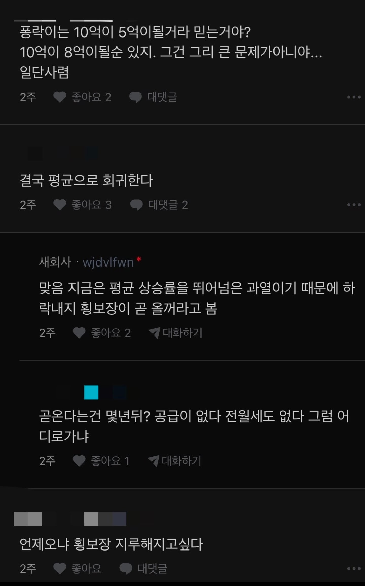

내가 말한 케이스 처럼
친인척 돈 빌리는건?
친인척이 채권추심함?
그게 아니면 그냥 수저임
무리한 대출이지 않음?
무리한 설정임
불가능하진 않잖아
내가 방법 알려줬으니 해보도록ㅋㅋ
친인척이라고해서 뭘믿고 빌려줌?
그냥 믿고 빌려준다면 그건 증여의 영역이라니깐 ㅋㅋ 국세청이 병신이 아니야
차용증유무 원금상환계획 실제이자지급내역 다 살펴봐
니가 첨에 무리하게 대출받는 방법 알려달라매
그래서 무리한거 알려줌ㅋㅋ
그냥 이재용한테 구걸해서 대출받는법도 방법이라고 알려주지그러냐
이재용이 친인척이야?
.....혹시 허언증 있냐?
니가 역량껏 빌려야지
친인척들이 널 못 믿음?
국세청이 병신이 아님 다 살펴봐서 괜찮으면 괜찮음
애들 말싸움도 아니고 수준이 왜그러냐 ㅋㅋ
국세청이랑 뭐 엮여본적도 없으면서 아는척이야 ㅋㅋㅋ
매년 엮임ㅋ
연말정산하는걸로 엮인다 ㅇㅈㄹ ㅋㅋ
무튼, 난 알려줬다~
친인척이 돈 돌려달라고 하잖어
그냥 떼먹으란거?
뭐 집사면 큰일나는줄 암 ㅋㅋㅋㅋ 그냥 사 시발 자기 형편에 맞게 필요한거 사는거지 내심 지들도 집값 올라서 한몫 잡고싶으니깐 집 안사고 타이밍 보는거 아님? ㅋㅋ
금리오르면 떨어진다던데 과연
부동산 가격과 금리의 상관관계는 이제 예전보다 많이 무색해짐
ltv dsr 규제를 빡빡하게 보기도 하고 무엇보다도 금액대별 한도 15억/4억, 25억/2억이 있어서 수도권은 대출 비중이 작고 현금 비중이 높음
예를들어 25억짜리를 사려면 최대 대출한도가 2억이고 필요현금이 23억인데 이정도 재력되는 사람이 2억에 대한 이자가 몇십 늘어난다고해서 재정에 기별도 안감
어차피 어딘가에는 살아야 하니까...
나오지도 않는 대출은 왤케 끌어오는거임?
삼전닉스 직원들 억단위 쌈짓돈이 어디로 갈까 생각해봐라
고덕 동탄 미사
서울가면 잠실 반포
고추 동탄 미시
서울가면 잠지 살포


언젠가는 오르고 언젠가는 떨어지겠지. 그 시기를 아무도 모르니 그냥 필요할때 사면 될 듯.
걱정이다(X)
걱정에 몸부림쳤으면 좋겠다(O)
ㅋㅋㅋㅋㅋㅋㅋㅋ
서울 공급 샷따내렸는데 내릴 수가 있나? 재개발 백날천날 해도 수요감당 못 할걸 서울 싹 갈아엎겠다 해도 최소 20년 프로젝트인데 답없다
발작하는 폭락이 댓글구경왔는데 쫓겨나서 이사하느라 정신이없나ㅋㅋㅋㅋ
의외로 댓글들이 정상적인
질투 ㅋㅋ
영원히 오르기만 하는 자산은 없음. 공급을 늘리려는 중이니 하락 또는 조정장이 오긴 올 거임.
하지만 현재 우리나라 거시 경제가 좋고, 물가는 계속 오르고, 수도권 집중 완화는 갈 길이 멀어보이고, 공급은 시간이 걸리는 상황.
살 여력이 안되는 게 문제지, 살 수 있다면 사는 게 맞는 선택.
개똥손이라 내가 산 집만 안오르네ㅠ
실거주 1채가 손해보긴 쉽지 않을 것 같은데...
맞음 안달남 ㅇㅇ
2금융도 1금융보단 덜하지만 dsr보는건 마찬가지라서 무리한 대출이 불가능